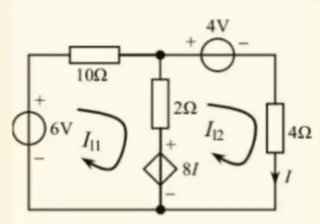

我补修《电路》时，很想有人把解题中间的那一步讲明白。做毕业设计时，我把这个问题带进了 VoltEdu，从编课程问答，到给两种蒸馏模型做 LoRA 微调，再到让学生在网页上听讲解。

从补修《电路》、课题申请和第一份周报，看清学生想问什么。
数字人能开口以后，检索试验暴露了回答重复的问题。
从重复的概念题、笔记本显存，一直追到两组 LoRA 运行。
从页面里的回答、视觉例题和答辩现场看最后交付了什么。
从一条课程问答走到低秩更新、两套训练配置和 500 题评测。
练开场、白板和连续追问，也回到五月答辩现场的两道题。
翻论文原图、周报和评测表，再练怎样把这段经历讲给人听。